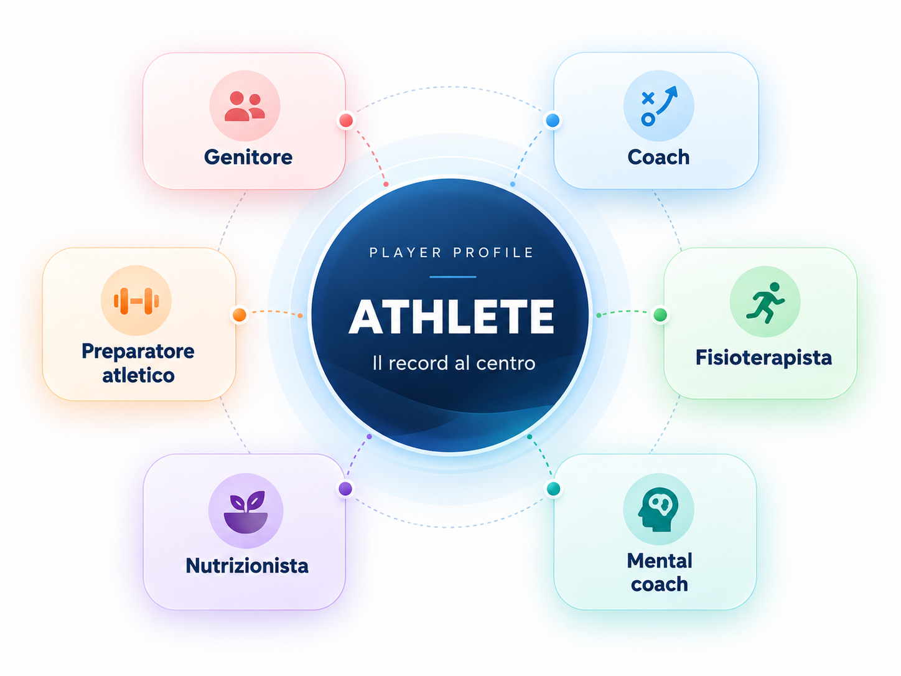

Un solo record atleta
Tutta la storia del tennista resta nello stesso ambiente: niente copie disperse, niente passaggi persi.
Allenamento, sviluppo, competizione, salute, recupero, materiali, avversari, costi e tutto il team — connessi intorno a un solo atleta.
Founding Beta · Accesso anticipato limitato · Web app
TPOS nasce per tenere insieme ciò che nel tennis agonistico tende a separarsi: programmazione, lavoro in campo, salute, recupero, materiali, competizione, costi e collaborazione del team. Non dodici archivi separati, ma un unico sistema costruito intorno all’atleta.
Tutta la storia del tennista resta nello stesso ambiente: niente copie disperse, niente passaggi persi.
Calendario, atletica, sviluppo, match, salute, recovery, materiali ed economics parlano tra loro.
Genitore, coach e professionisti lavorano sullo stesso percorso con accessi diversi, ma senza perdere il quadro generale.
Genitori e professionisti lavorano sullo stesso percorso attraverso accessi e permessi differenziati, senza moltiplicare archivi e versioni dei dati.

La struttura del sito rispecchia quella dell'app: ciò che scopri qui è ciò che ritrovi nella dashboard.
Programmazione, logistica, tornei, scuola, visite, viaggi e vita quotidiana dell'atleta.
Apri scheda →Preparazione atletica, carico, forza, potenza, velocità, agilità, conditioning e monitoraggio.
Apri scheda →Tecnica, tattica, obiettivi di sviluppo, valutazioni, progressi, video e test.
Apri scheda →Libreria esercizi, pattern e sessioni, collegati agli obiettivi di sviluppo.
Apri scheda →Risultati, statistiche, debrief, performance e analisi delle partite.
Apri scheda →Scouting, storico H2H, pattern, video, note e preparazione pre-match.
Apri scheda →Racchette, corde, tensioni, scarpe, setup, ore di utilizzo e storico configurazioni.
Apri scheda →Stato fisico, infortuni, dolore, fisioterapia, screening, monitoraggio e documenti.
Apri scheda →Alimentazione, idratazione, sonno, fatica, soreness, riposo e readiness.
Apri scheda →Obiettivi mentali, routine, focus, self-talk, gestione emotiva e lavoro psicologico.
Apri scheda →Percezione, visual training, reaction time, neuro-training, protocolli e misurazioni.
Apri scheda →Costi, pagamenti, budget stagionale, sponsor, costo per torneo e sostenibilità.
Apri scheda →Tennis Player OS adatta accessi, priorità e schermata iniziale in base al ruolo: atleta, genitore e professionisti lavorano sullo stesso percorso, ma con strumenti diversi.
Atleta: check-in, giornata, routine, compiti rapidi
Genitore: planning, logistica, costi, coordinamento
Coach: sviluppo, drills, match, obiettivi
Staff: salute, recupero, nutrizione, monitoraggio
La dashboard atleta mette al centro ciò che conta oggi: check-in, prossimi impegni, routine e azioni rapide.
Quello che conta adesso e nelle prossime ore.
10:00–11:00 · Studio
Termina tra 27 minSonno, stanchezza, umore, voglia e concentrazione.
Da compilare dopo l'ultimo allenamento di oggi.
Apriamo Tennis Player OS a un primo gruppo di 30 Beta Owner. Ogni account ha accesso completo al proprio ambiente e a tutti i moduli disponibili durante la Beta.
I 30 posti sono stati assegnati. Puoi comunque lasciare la tua richiesta per la lista d'attesa.
Durante la Beta puoi proporre nuove funzioni o modifiche. Le richieste vengono valutate in base a utilità generale, fattibilità e priorità di sviluppo.
Beta significa beta. Le funzioni possono cambiare, alcune integrazioni sono ancora in sviluppo e possono esserci bug. I dati restano sotto il controllo dell'utente.